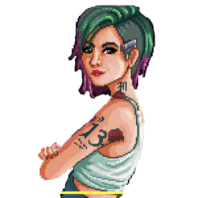

• Porcentagem de jogos single-player em relação a todos os jogos
• Porcentagem de jogos de ação em relação a todos os jogos
• Desenvolvedores com maior número de avaliações negativas dos jogos Multi-Player de 2014

Clique na estatística desejada e veja o que desejar.
Voltar ao mapa
Todos os estilos de jogos baseados no tema
×